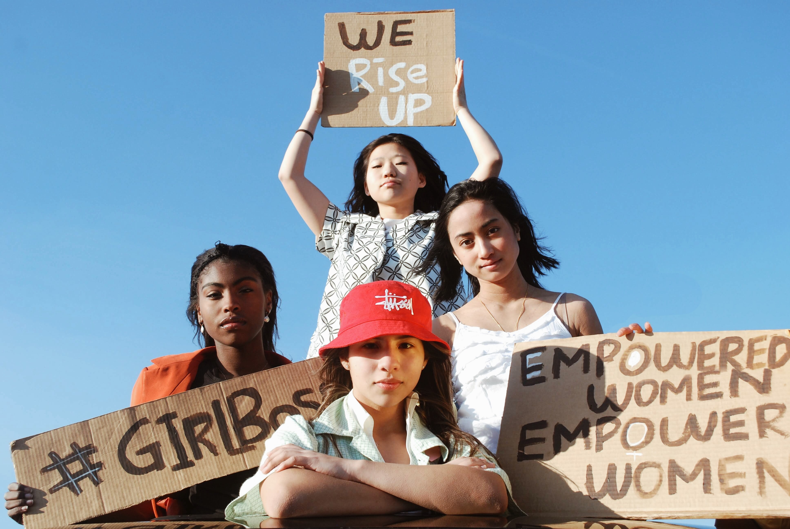

2 Production
Design Elements with Justification
Colors
We chose these colors since red stands for strength and determination, burgundy red stands for wealth and ambition, turquoise portrays peace and protection, black shows power and elegance, and beige stands for independence and flexibility. All these things come back in the values and the value proposition of our brand. Next to that, we think the combination of these colors shows pow-er but is not overwhelming in a way that is hard to look at.
Typography
The headings, fonts, and paragraphs are written in Source Serif Variable font. We find it necessary that the letters are easy to read because we want to bring a message across and for the ease of the customers. We think the fonts are pretty, but in a clear and 'in your face' way, connecting to our brand values. Text is an essential aspect of our brand since this is the way we convey messages, so we must have fonts that are easy to read and look good when the font size is made bigger, so it will look good on the sweaters. We made sure the fonts, sentences (and the pictures and videos we will talk about later) were legible and pleasant to see on laptops, Ipads, and phones.
Visual elements
We used the design principles we learned during class to make the site clear and efficient. The visual elements on our website, like videos, our logo, pictures, fonts, and colors, are meant to bring the message and values of our brand across. We want to look bold but severe, professional, and easily distinctive from other brands with other values. The visuals make our message clear, our site less boring, and are meant to catch the attention. We tried to do this by, for example, playing a small video portraying strong women right away when you get to the homepage of our website. Our visuals are clear, with not too much happening in the pictures and videos, so they are concise and clear to understand but still able to convey a message.
User interface patterns and the navigation of content
We decided to make our site as uncluttered as possible. That is also why we chose to use simple buttons at the top of our page to get to the different parts of our site. From every page, the user can click on the home button (or another menu bottom), and when the user chooses an item from the catalog to take a look at, they can quickly get back by the 'back' button.
To get a little bit more into detail. We used a small video on the home page and put that in a loop. This is to get the visitors' attention and show our values. The video is high quality, which portrays professionalism. The women in the video look profound, determined, and powerful.
Furthermore, we have a carousel on our homepage with a few of our sweaters. We have done this to show the customers what products we sell and what we stand for and show them items they might be interested in to get them to the catalog and eventually buy our product. The carousel moves automatically so that the users see multiple sweaters they might be interested in and understand our vision better. However, they can also move the carousel themselves with the signs if they think it moves too slow or too quick or if they want to take a more extended look at a specific item. If they click on one of the sweaters, they immediately go to a page to see that particular sweater. Further down on our homepage, some pictures are features of people 'in action' standing behind our brand. All elements on the homepage give the visitor a quick impression of our brand and products they can buy. By clicking on the 'home’-button or the logo next to it (in the navigation bar), customers can always directly get back to the home page.
When clicking on a sweater on our homepage, a visitor directly gets to a picture of the specific sweater he chose and the specifications of this sweater next to it. We created a drop-down menu in the description, so the customer can easily see what sizes are available and pick a size. The customer can add the sweater to his shopping cart with a button. Under the sweater are suggestions for other sweaters the visitor might be interested in. This is to get our customers to buy as many sweaters as possible by showing them as many designs as possible. When the customer clicks on one of these suggested sweaters, he directly gets re-directed to a picture of this sweater and the product details. At each sweater is also a button called 'Back to the catalog.' We heard during our interviews that our target group is used to having a button like that on the top of the screen. We choose to put it at the sweaters because then the visitor has already made a few clicks to get to the page where he is, whereas on the other screens, you can quickly get where you want to be by clicking the navigation bar at the top of the screen. After all, most information is right at the first screen of the subcategories. In our catalog and when looking at a sweater, we tried to make everything seem like one whole, which is why many shapes and sizes return in the pages, and the pages look symmetrical.
We made the AboutYou page as straight to the point as possible, and we combined elements on this page that we think are helpful if visitors want to know more about our brand and/or engage with our brand. On the webpage 'About VirtYou,' customers can first see a picture and description of the developers of the brand. When scrolling down (which the customers can do on all our web pages), the visitors can find some more information on the brand and an explanation of its values. Further down, some posts of our social media accounts can be seen. When clicking on these posts, the customer gets redirected to that post on our social media account. The social media icons also link to our social media accounts, just like the TikTok, Instagram, and Outlook buttons in the footer on each of our web pages do.
When going to the 'account' webpage, the customer can fill in his user name and password in the text fields. What exactly the person types at 'password' is not visible for privacy reasons. The customer can also click a checkbox confirming he agrees with the terms and conditions of the service and can then click on the 'sign in’-button. Under the 'sign in’-button is a button that says 'register.' When clicking this button, the customer gets to a similar page where he can fill in more personal details to create an account. When trying to register or sign in, you currently get a pop-up because the site is not active for real customers, which is why there is no shopping cart, and you currently get a pop-up when clicking on the button 'add the shopping cart' at the sweaters. We tried to make the sign-in page and the register page as clear as possible by not adding any distractions to the process of signing in or registering on the page. We link these two pages to each other because many websites do this, so people are used to this, as could be seen when testing our prototype. Also, the word 'account,' which is used in the navigation bar, relates to signing in to an account and making an account
We used a drop-down menu at the navigation bar part for 'corporate,' making it easy to navigate quickly to a specific course without cluttering the navigation bar. On the pages of 'corporate,' we did not focus on the design but rather on readability because of the site's serious, businesslike, and professional function.
The structure of content
We choose to put the categories' Home', 'Catalog,' 'About VirtYou,' Account,' 'Corporate,' because these words are self-explanatory (which was proven during our prototype testing). By clicking on these categories, the customers right away go to one simple page with the information they want. We thought that the customers that visit our site are probably interested in buying a sweater and otherwise want to know more about our brand. That is why those two categories are the first ones mentioned in the menu.
We decided to put our content in the middle of the page, with broad margins around them, to make the text more legible and give it a professional look. We aligned the text and pictures on our website. All pages on our website have a similar set-up to provide the website with a consistent and well-structured look and feel.
Connected to our persona and other courses
Persona – Our target group is 18-27 years old and has the necessary online skills to use our web-site. However, their attention span is not broad, so we use many pictures and a video to get their attention. This is also one of the reasons we made are page as user-friendly as possible. When havving to search for a button, the visitors of our site (18-27-year-olds) will probably lose their attention and will not buy a sweater or read about our brand. On our page, we also link to our TikTok and Instagram accounts, which are broadly used amongst our target group. We also included our mail address since some youngsters don't like to make a call and prefer to write questions out instead. The quotes on the sweaters are sentences said by our target group during interviews with us.
Content – It is hard to look around our brand values when visiting our website. We used colors and many visuals to make our site bold. We did, of course, put the sweaters on our site, but way more did we focus on our values, what our brand stands for and what makes us unique. We dedicated a whole page to that.
Marketing – We directly link to our social media channels at the bottom of each page. Next to that, we portray our unique value proposition on the site, and as can be read under 'persona,' we made the site fit the target group. The prices of the sweaters are based on what our target group would be willing to pay for them (as we learned during the interviews), and the quotes from the sweaters are accurate quotes our target group said during interviews with us.
Management – We portray our unique value proposition on the site, and as can be read under 'persona,' we made the site fit the target group. The quotes from the sweaters are accurate quotes our target group said during interviews with us. The prices of the sweaters are based on what our target group would be willing to pay for them (as we learned during the interviews) and as we stat-ed in our lean canvas.
We developed our product by keeping it simple but using quotes from the target group so that they recognize themselves and stand behind the message on their sweatshirts.


The used design elements in our final website
We used many straight lines in our website because we wanted to divide each subsection of the website. Next to that, we underlined our values on the page 'About VirtYou' to emphasize our val-ues.
Our buttons are oval since we want our audience to feel welcome to click on the buttons and check out our sweaters. We want to convey boldness and share a serious message. Sharp corners on shapes sometimes feel too threatening, according to us. This is also why we don't use many sharp corners on the page where our audience can log in and register. On other pages, we do use sharp corners because on those pages.
We did not use a difference in texture in our letters or the color of our logos or text since we wanted to convey a serious message that must be clear rather than showing something wonderful and artistic.
We divided some subsections of our website by color. The colors red, white, and black come back on every page and subsection of the site to create unity. Next to that, we made things we wanted to stand out red to show hierarchy and emphasize these pieces of text.
The used design principles in our final website
We tried to create unity and harmony by repetition of colors and repetition of the header and footer on all sites. For example, the sign-in page also looks similar to the registration page. We also tried to place images the same way and place the products the same way in the catalog. We also have a lot of similarities on our website. For example, the sign-in page and registration page look very similar and are built the same way.
When looking at balance, most of our pages are symmetrical. The right side of the screen does not give the same information as the left side of the screen, of course, but the grids look the same on both sides.
Using a size difference in text and images, we tried to create a hierarchy throughout every site page. But we also made use of scale and proportion. The most crucial text is often more significant than the rest, and elements that belong together are also placed together. We also made use of focal points. For example, the video on the homepage covers the whole width of the screen, making the video a focus point rather than the information above or under it. In these ways, we created dominance and emphasis without losing track of the unity of the entire design.
As said before, some pages have round edges at shapes, because of the welcoming vibe of that page, for example, the registration page or the buttons to add a product to the shopping cart. Oth-er pages have sharp edges since we want to convey a serious message boldly. This way, we created contrast. The shapes on every individual page, however, are more similar. Since we kept the background of our web pages light in comparison to the foreground, we also created contrast.
Testing Report
We tested our paper prototype with five people from our target group. All participants were with-in the age category of our target group. As we learned from the problem interviews, most of the testers were female since most females need our brand. We also included some males in the test-ing to be safe from biases. We did the testing rounds on campus, where the participants, one by one, could sit at a table, and one person of our team gave the participants some little 'assignments' with which the site could be tested and changed the papers of our paper prototype to make it look like a functioning site. Another team member recorded video and audio of the testing with a mo-bile phone. We asked our participants to think aloud as much as possible during the testing, and after the testing, we asked them for their opinion about our site and if they had any tips.
Our goal was to see if it is straightforward for our target group what our brand stands for, what we sell, and how to use the site.
Firstly, we asked the participants if they looked at our homepage and if they knew what kind of products we were selling.
We gave our participants the following assignments and mixed the order up with every person:
- Search for a sweater in size S and put it in your shopping cart.
- You have a question; search which phone number you can call if you have a question.
- You would like to know what values the brand 'VirtYou' stands for, try to see if you can find them on the site.
- You have become enthusiastic about 'VirtYou' and want to follow them on Instagram. Try to see how you can find them on Instagram.
- Search for another sweater. It has to be a sweater with the brand's logo and a quote.
- Add a sweater in size XL to your shopping cart.
- Delete the sweater in size S from your shopping cart and make sure you have TWO sweaters in size XL in your shopping cart (the ones with the logo and quote you just added).
- Log in to your account.
We tested our online site with two people from our target group. Both participants were within the age category of our target group. We tested the online site with one male and one female par-ticipant to stay inclusive in our testing and avoid bias as much as possible with only two partici-pants. We did the testing rounds on campus, where the participants could use a laptop of one of our team members to explore our site. This team member would film the test with a mobile phone, and another team member gave the participants small assignments. We asked our partici-pants to think aloud as much as possible during the testing, and after the testing, we asked them if they still had any tips for us.
Our goal was to see if our site is functioning, easy to use for the target group, understandable and customer-friendly. First, when they look at our homepage, we asked the participants if they knew what kind of products we were selling.
We gave our participants the following assignments and mixed the order up with every person:
- Put a sweater in size 'S' in your shopping cart.
- Try to find the values of the brand.
- Try to go back to the homepage.
- Try to see if you can find our social media accounts.
- Create an account on our site.
Results of the testing
The feedback we received during the testing phase ranked by importance.
Paper prototype testing:
Online prototype testing:
What we improved on our site after the testing phase
After the paper prototype testing:
- We decided only to show the phone number of our brand, which you can call with questions, on our site. We do not feature the agency's phone number that helps victims of boundary-crossing behavior anymore.
- The picture carousel with sweaters on the homepage now also shows the features of the specific sweaters, like the names of the products.
- We made the logo of our brand, which is on the far left at the top of the screen, to our home button and have no extra home button anymore.
After the online prototype testing:
- We changed the name of the second button that said 'account' to 'corporate.' We had not done this yet, but now that we did, there will be no confusion on which button to click to get to your account.
These changes have improved our website's legibility, professional look and feel, and intuitively.
Copyright-free content used for the site:
Unsplash, Nathalie Hua
Unsplash, Ehimetalor Akhere Unuabona

Unsplash, Samantha Sophia

Unsplash, Monica Melton